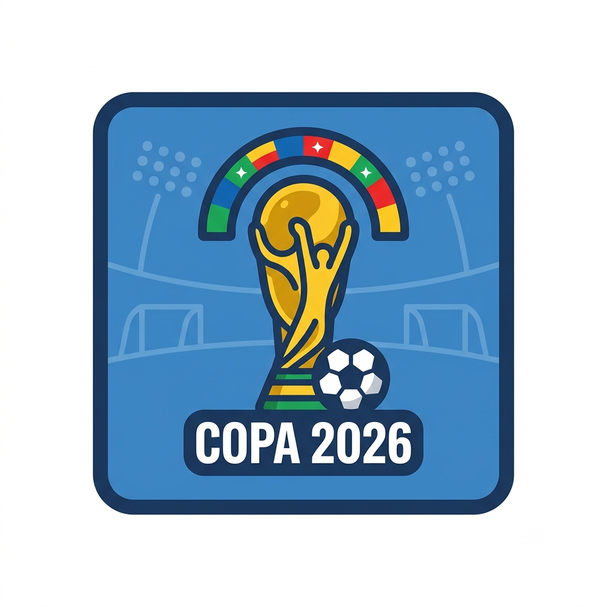

copa do mundo de 2026
Por:Matheus Eduardo
Bem-Vindo ao cmpartilhar detalhes de tudo que aconteceu na copa do mundo
Espanha Bicampeã Mundial
A Espanha conquistou o seu segundo título mundial ao vencer a Argentina por 1 a 0 na prorrogação da grande final, disputada no MetLife Stadium. O gol decisivo foi marcado pelo atacante Ferran Torres.
A Espanha conquistou o seu segundo título mundial ao vencer a Argentina por 1 a 0 na prorrogação da grande final, disputada no MetLife Stadium. O gol decisivo foi marcado pelo atacante Ferran Torres.
Formato Expandido: Esta foi a primeira Copa do Mundo a contar com 48 seleções participantes e 104 partidas disputadas ao longo de três países-sede: Estados Unidos, México e Canadá.
3º Lugar Movimentado: A Inglaterra garantiu a terceira colocação ao vencer a França por 6 a 4 em um jogo repleto de gols.
Campanha do Brasil: A Seleção Brasileira encerrou sua participação nas oitavas de final após ser derrotada por 2 a 1 pela Noruega.
Premiações Individuais
Bola de Ouro (Melhor Jogador): Rodri (Espanha)
Chuteira de Ouro (Artilheiro): Kylian Mbappé (França), com 10 gols
Luva de Ouro (Melhor Goleiro): Unai Simón (Espanha)
Melhor Jogador Jovem: Pau Cubarsí (Espanha)
Resumo do Mata-Mata a partir das Quartas de Final
Quartas de Final:
França 2 x 0 Marrocos
Espanha 2 x 1 Bélgica
Noruega 1 x 2 Inglaterra (na prorrogação)
Argentina 3 x 1 Suíça (na prorrogação)